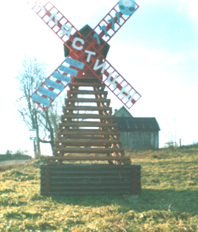

Краязнаўчы даведнік
Гісторыя Клясціц: лічбы, падзеі, факты"
Гісторыя Клясціц
Першыя звесткі аб Клясціцах
1700 г. :
Вёска Клясціцы пачынае адлік свайго гістарычнага шляху.(Клясіцкае стараства)

Змест
Гісторыя Клясціц
Першыя звесткі аб Клясціцах
Клясціцы ў 18-м стагоддзі
Клясціцы ў XIX ст.
Клясціцы ў XX ст.
Сучасныя Клясціцы